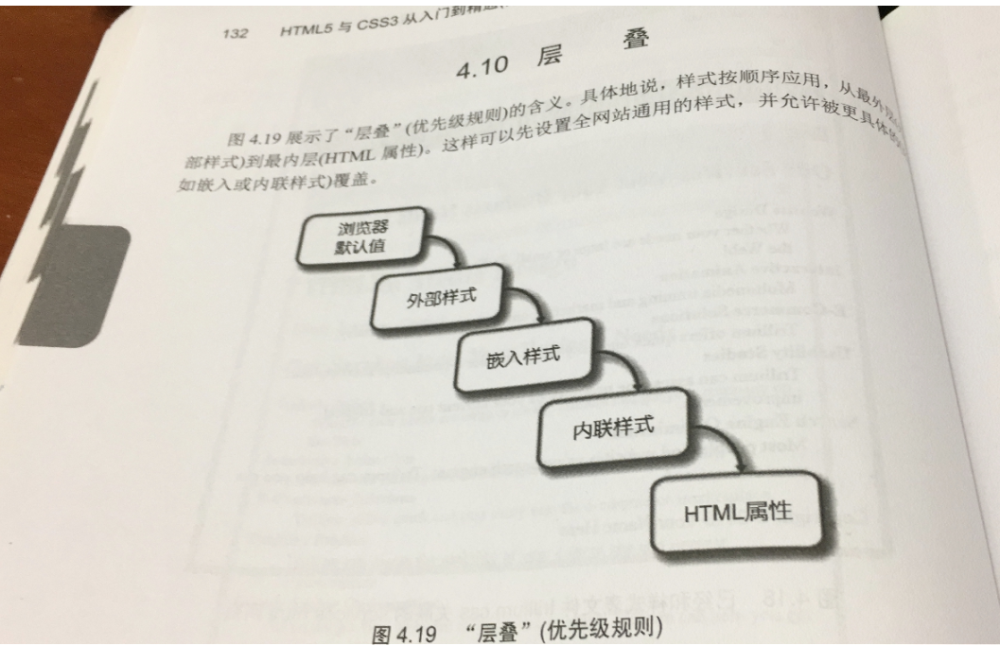

CSS学习
--------学习资源
CSS语法检查http://jigsaw.w3.org/css-validator/
配置CSS的方法：
1.行内式
行内式通过直接设置元素的style属性来引入css
<div style="width: 100px; height: 100px;">行内式</div>
优点：元素的样式简单明了
缺点：代码不易维护
2.内嵌式
通过在head标签中加入style标签来引入CSS
<head>
<style type="text/css">
/*样式*/
</style>
</head>
缺点：不能被多个页面重复使用
3.链接式
通过link标签来引入CSS文件
<head>
<link type="text/css" rel="stylesheet" href="css/style.css">
</head>
优点：页面在加载元素的同时也会加载其样式
缺点：增加了http请求
4.导入式
通过在head标签中加入style标签及@import来引入CSS
<head>
<style type="text/css">
@import""
</style>
</head>
缺点：导入式会在整个页面加载完毕后，再加载CSS文件，这样会导致页面在打开时，先显示的是无样式的页面，闪烁一下之后，页面才有了样式
CSS选择符和声明：
CSS语法基础
选择符可以是HTML元素名称，类名或id
声明是你要设置的CSS属性（例如颜色）及其值
一个选择符要配置多个属性可以用分号（；）
例：body{color: blue; background-color: yellow}将网页配置成黄底蓝字
如果需要更多的颜色就可以参考http://webdevbasics.net/color的”网页安全调色板”
body{color: #3399cc; background-color: #FFFFCC}将网页配置成浅黄底中蓝字
配置内联CSS：
通过修改style实现
<body style=" color: #008080;">
但是如果在body内<p style="color: red">文本 </p>就会覆盖了body的全局样本。如果有10个段落都需要以这种方式配置，就会造成大量冗余代码，因此并不高效
配置嵌入CSS：
嵌入样式应用于整个网页文档，这种样式要放到网页head部分的<style>元素中。
例子：
<head>
<title>Trillium Media Design</title>
<meta charset="utf-8">
<style>
body{ background-color: #E6E6FA;color: #191970}、
h1{background-color: #AEAED4;color: #191970}
</style>
</head>
配置外部CSS：
当CSS位于网页文档外部的时候，CSS的灵活性与强大才真正的显露无疑。外部样式表是包含CSS样式的文本文件，使用.css拓展名。这种.css文件通过link元素与网页关联。因此多个网页可以关联一个.css文件。.css文件不包含任何HTML标记----它只含CSS样式规则
优点是只需在一个文件内配置样式
Link元素
Link元素位于网页的head部分，是独立标记(void标记).link元素使用三个属性：rel , href和type
例如
<link rel=”stylesheet” href=”color.css”>
CSS的class, ID和后代选择符
------这些东西都要放在<style></style>里
例子 <style>
.feature{color : #FF0000;}
main p {color : #00ff00;}
#new {color: #FF00CC;}
</style>
Class选择符:
Class选择符配置一类CSS规则，并将其应用于网页的一个或多个区域，配置一类样式时，要将选择符配置成类名。在类名前添加句点符号（.）。类名必须以字母开头，可包含数字，连字号和下划线但是不能有空格，以下代码配置名为feature的一类样式
.feature{color: #FF0000;}
一类的样式可以应用于任何元素。这是使用class属性做到的
例：<li class=”feature”>123456</li>
ID选择符：
Class用于网页上多次响应使用，而id在每个网页上只能使用一次。配置id时记得在前面添加#号
#content{color:#333333;}
<div id=”content”>123456</div>
后代选择符:
用后代选择符在容器元素的上下文配置一个元素。
例如：将main元素中的段落配置成绿色文本
span元素
<span>元素在网页中定义一个上下不留空的内联区域。以<span>标记开头,以</span>结尾。适合格式化一个包含在其他区域（比如<p>
,<blockquote>或<div>)中的区域。
CSS的层叠（局部优先，作用范围越小越优先）

例如导入的.css中body { background-color: #FFFFCC（黄色）;
color: #000000（黑色）; }
但是同时又在html的head中定义
<style>
body { color: #0000FF（蓝色）; }
</style>
显示的页面为黄底蓝字